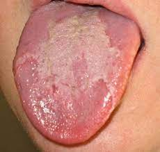

Glossitis

SYMPTOMS:
Your symptoms may vary depending on the cause of the inflammation. General symptoms include:
-
pain or tenderness in the tongue
-
swelling of the tongue
-
change in the color of your tongue
-
an inability to speak, eat, or swallow
-
loss of papillae on the surface of your tongue
CAUSES
A few factors can cause inflammation of the tongue, including:
- Allergic reactions
Allergic reactions to medications, food, and other potential irritants may aggravate the papillae and the muscle tissues of the tongue. Irritants include toothpaste and certain types of medications that treat high blood pressure. -
Diseases
Certain diseases that affect your immune system may attack the tongue’s muscles and papillae. Herpes simplex, a virus that causes cold sores and blisters around the mouth, may contribute to swelling and pain in the tongue.
-
Low iron leves
Not enough iron in the blood can trigger glossitis. Iron regulates cell growth by helping your body make red blood cells, which carry oxygen to your organs, tissues, and muscles. Low levels of iron in the blood may result in low levels of myoglobin. Myoglobin is a protein in red blood cells that’s important for muscle health, including the tongue’s muscle tissue. -
Mouth trauma
Trauma caused by injuries to the mouth can affect the condition of your tongue. Inflammation may occur because of cuts and burns on the tongue or dental appliances like braces placed on your teeth.
DIAGNOSIS
You may see your dentist or doctor for an assessment of your condition. They’ll examine your mouth to check for abnormal bumps and blisters on your tongue, gums, and soft tissues of your mouth. Samples of your saliva and blood may also be taken and sent to a laboratory for further examination.
TREATMENTS
Treatment for glossitis typically includes a combination of medications and home remedies.